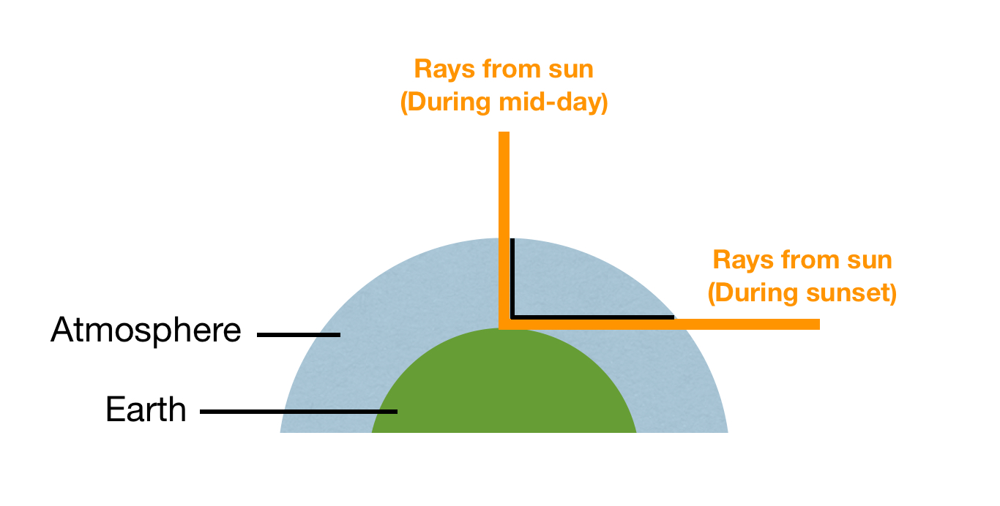

Sun light is scattered in the atmosphere in all directions,
blue light is scattered more than other colours because it travels shorter wavelengths
The path sunlight travels through the atmosphere is greater at horizon,
so the longer wavelengths (red/orange) are able to reach the observer more than shorter ones.

Green flashes are an optical phenomena that sometimes occur right after sunset.
To understand the green flash phenomenon, you need to know about Refraction.
Refract: Water, air, or glass making ray(s) change direction when it enters at an angle and slows them.
They occur because the atmosphere refracts and scatters sun light differently according to its wavelength (that's why the sky is blue).
In general, refraction by air is greater at shorter wavelengths,
which means during sunsets violet/blue/green light last slightly longer than red light.
Since scattering affects shorter wavelengths the most, much of the violet/blue light is lost before reaching your eye,
leaving only the green light briefly visible.